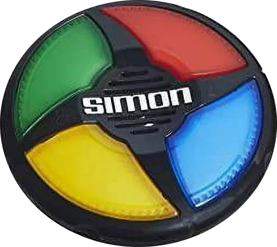

Intro
The Simon Game is an old Hasbro video game. It consisted of four colored buttons (red, green, blue, and yellow) that each play a unique tone. Players must repeat an increasingly long string of tones that Simon creates. If a player gets the order wrong, they lose
This is the documentation on how we created our version of the game. The game itself can be found here.
The complete final "File Package" can be downloaded here.
How to Play
- The game shows the first color in a sequence. The user clicks on the button with the same color.
- The game shows the next color, and the user has to remember the color sequence (first color, second color) and so on and so forth.
- The game continues to build the color sequence and the player has to remember ALL of the colors in order.
- If the player messes up the sequence, then the game ends.
Basic Setup
We're going to be using HTML, CSS, JavaScript and jQuery to create our game. So the fist thing we need to do is:
- 1.) Create our basic HTML file.
- 2.) Create our CSS file and link it to our HTML file.
- 3.) Create our JavaScript file and link it to our HTML file.
- 4.) Install the latest CDN version of jQuery.
- 5.) We're also using a custom font for our game text which will go in the <head> section of our HTML file. The link is:
- <link href="https://fonts.googleapis.com/css?family=Press+Start+2P" rel="stylesheet">
HTML Setup
As we've stated, our HTML file needs to included links for our CSS, JavaScript, and jQuery files. The CSS link will go in the <head> section of the page. The JavaScript and Jquery links will go at the very bottom of or HTML page, right before the closing <body> tag.
Remember, the jQuery link must be before the JavaScript link so that the jQuery will load first.
The actual HTML coding for the game is pretty simple and straight forward. We've got a couple of <h1> elements, a container <div> to hold our "buttons", and some <div>'s for the actual buttons.
- HTML
- <h1 id="level-title">Press Any Key to Start</h1>
-
- <div class="cont">
- <div class="row">
- <div type="button" id="green" class="btn green"></div>
- <div type="button" id="red" class="btn red"></div>
- </div>
- <div class="row">
- <div type="button" id="yellow" class="btn yellow"></div>
- <div type="button" id="blue" class="btn blue"></div>
- </div>
- </div>
-
- <h1 id="restart-title">Press any key to Start Over</h1>
Notice the id and class assignments. These will be used by the CSS for styling, and by the JavaScript and jQuery for the game functionality.
And that's it. This is all the HTML we are going to need to make our game.
CSS Setup
We are not going to discuss the CSS file in any great detail, because this project contains pretty basic styling. That being said, the CSS file is included in the Zip File that can be downloaded here.
JavaScript/jQuery Setup
- the Variables -
And now for the interesting part, the JavaScript and jQuery code. The first thing we're going to do is set up our variables:
- JavaScript / jQuery
- let buttonColors = ["red", "blue", "green", "yellow"];
- let gamePattern = [];
- let userClickedPattern = [];
- let level = 0;
- let gameOver = 0;
- $('#restart-title').hide();
- buttonColors - is used to identify which color is is generated by the random color generator. This is the games AI that determines the color sequences. It is also used to identify which button the user pressed in response to the the game flow.
- gamePattern[] - is the array of colors that is built by the random color generator. It starts as an empty array and grows by one for every level that the game plays. This is reset to an empty array on game restart.
- userClickedPattern[] - is the array of colors that is built by the user response inputs, as they play the game. Like - gamePattern, it starts as an empty array and grows by one for every level that the game plays. This is also reset to an empty array on game restart.
- level - is simply used to display the current game level. Every time the user inputs a correct sequence, the level increases by one. The level will reset on game restart.
- gameOver - is used to determine if a key press has been utilized to start the game, and to determine if the game is still running. If the player inputs an incorrect sequence, the game will end. This variable controls this functionality.
- $('#restart-title').hide(); - this jQuery code controls the last <h1> element, which only displays when a game ends. It's only purpose is to instruct the player to "Press any key to restart the game". So when a game starts, we will "hide" this element, and show it only when a game ends.
- the keypress event -
Next we're going to add our event listeners.
The first event we want to create is the keypress event. This will be used to start a new game, or to restart a game.
- JavaScript / jQuery
- $(document).keypress( function() {
- if (!level) {
- level = 1;
- nextSequence();
- } else {
- }
- });
This is pretty straight forward code here:
- First we are add a keypress event on the entire webpage (document).
- Initially, AND when we Restart a game, our level variable is set to 0. So when a keypress event is detected, the first part of the if statement will execute. This will set level to 1, and generate our first random color with (nextSequence()). So what this is really checking for is, "is this the first run of the game", because after the first run, level will be set to 1, or greater, and this part of the if statement will no longer run.
- The only other time we utilize a keypress event is if the game ends, and the user has pressed a key to "Restart the Game". In this case, the gameOver variable has a value of 1, so if a keypress event is detected, the startOver() function will run and reset the game variables for a new game.
This code has another effect here. The game will ignore any keypress events, either after the game has started, or before the game has ended. This halts either of the conditions from running in the middle of the game.
- the click event -
The next event we want to listen for is a click event which will allow the player to click on the buttons when playing the game. Because of the HTML id, and class assignments, we refer to the buttons by their color name, Red, Blue, Green, and Yellow.
- JavaScript / jQuery
- $(".btn").click( function() {
- if (level && !gameOver) {
- let userChosenColor = $(this).attr("id");
- userClickedPattern.push(userChosenColor);
-
- playSound(userChosenColor);
- animatePress(userChosenColor);
-
- checkAnswer(userClickedPattern.length - 1);
- }
- });
Not too complicated, but let's break it down.
- We are assigning our click event to the ".btn" class. If we look at our HTML code above, we notice that the .btn class is assigned to every button. So we are assigning a "click" event to all of the buttons.
- The next thing we do is an if statement. What this does is prevent any output from the click events, if the game is not actually running. The only time level will be greater than 0, AND gameOver is equal to 0, is when the game is actually running. This is the only time we want to process a button click.
Now that we know the game is actually running, the next thing we want to do is to actually process the click event. If we look again at our HTML code we see that each button has an "id" assigned to it that is the color of that button. (green, red, yellow, blue). We can use this to see which button was actually "clicked".
- We use the this keyword to detect this button click. Retrieve the attr (attribute) of the id for this button, and assign it to the variable userChosenColor. So, userChosenColor becomes green, red, blue, or yellow depending on which button was clicked.
- Add userChosenColor to the end of our userClickedPattern array using the push method. Over subsequent levels, this builds up our userClickedPattern array with all of the colors the user has clicked.
- Next we run the playSound function, which will play the appropriate sound for the userChosenColor.
- Next we run the animatePress function, which will animate the button that was clicked, for the userChosenColor.
- And finally, we're going to run the checkAnswer function, to check that the userChosenColor is the correct color in the sequence. We are passing in the variable, userClickedPattern.length - 1, which is the last element in the array. Remember that the array starts counting at zero, so we must check length - 1 to make sure we checking, the last element in the array.
We can see from the click event that when the player clicks a button, we call two functions:
- - playSound()
- plays the appropriate sounds for the button that was clicked
- - animatePress()
- animates the button that was clicked
so let's create these functions.
- Game Sounds -
Inside our file structure, we have a sounds directory with all of our sound files:
 sounds
sounds
- blue.mp3
- green.mp3
- red.mp3
- yellow.mp3
- wrong.mp3
so we can call the appropriate mp3 sound file for which ever button was pressed, or if the user's input is incorrect, play the "wrong.mp3" and end the game. To actually play the sound, we build the following function:
- JavaScript
- function playSound(name) {
- let audio = new Audio(`sounds/${name}.mp3`);
- audio.play();
- }
You can see that we are passing in one variable, which is the color name. This was derived by the id of the button that the user clicked.
So we have a color name (red, blue, green, or yellow), and in our playSound function, we create a "path" to the appropriate mp3 file. For example: sounds/red.mp3. From there we just assign this "path" to the variable audio, and finally play() the sound file at the "path" that audio represents.
Button Animations
When the user clicks on a button, it plays a sound. It also "animates" the button clicked to give some "haptic" feedback to the user. And to accomplish this, we created our animatePress() function:
- JavaScript
- function animatePress(currentColor) {
- $(`#${currentColor}`).addClass("pressed");
- setTimeout(function() {
- $(`#${currentColor}`).removeClass("pressed");
- }, 100);
- }
So what have we got going on here?
Well, for starters, we have defined a class, in our CSS, called pressed, that looks like this:
- CSS
- .pressed {
- opacity: 0.7;
- box-shadow: 0 0 20px white;
- background-color: grey;
- box-shadow: none;
- }
which can change the look of any one of the buttons.
So in our JavaScript, we're going to "pull in" the color of the button that was pressed currentColor. We then "call" that button with jQuery, $(`#${currentColor}`). Notice that we are using a string temperate literal to select the button based on it's id and color name (currentColor).
This allows us to select the button with the id of whatever color was clicked. Now that we have our "selected" button, we can add the class "pressed" to that button, which changes the look of the button, and 100ms later, we remove the pressed class.
This gives us our "animated" effect.
Let's Play
So we've got our HTML and CSS set up. Our JavaScript has defined all of the variables, created our keypress and click event listeners that allow us to start and play the game. We've added our sound and animation effects to the game. I think we're actually ready to start writing the code that controls the game flow.
Now if we look at the code for our keypress event, we see that the first part of the if statement is checking whether or not it is the first round of game play. If it is, then we make level = 1 and we run a function called nextSequence().
The nextSequence() function is where we pick a random number, between 0 abd 3, and assign it as the computer's pick for a color. Once we get a random number, we pull the actual color name from the buttonColors[] array that we defined with all of our other variables. So if the random number generated is 2, the the computer's picked color will be buttonColors[2], or "blue".
So, we're going to run the nextSequence() function initially at the start of the game so the AI can pick a color for the user to match. After the AI picks a color, the user will try to match the color sequence. If they get it correct, the we will run the nextSequence() function again, pick a new AI color, and continue the game.
Now we're getting a little ahead of ourselves here. We will have to write a function that checks the user input, and if it is correct, continue the game. If not, then end the game. But first, let's concentrate on creating the nextSequence() function.
nextSequence()
Let's go ahead and write the code, and then we'll beak it all down:
- JavaScript
- function nextSequence() {
- $("#level-title").text(`Level ${level}`);
-
- userClickedPattern = [];
-
- let randomNumber = Math.floor(Math.random() * 4 );
- let randomChosenColor = buttonColors[randomNumber]>;
- gamePattern.push(randomChosenColor);
-
- $(`#${randomChosenColor}`).fadeIn(100).fadeOut(100).fadeIn(100);
- playSound(randomChosenColor);
- }
So every time we run a round of the game, we're going to call this function.
- First we use jQuery to change our #level-title to display the current level.
- Next we set the userClickedPattern[] to be an empty array.
- (this array will hold the user color selections as we play the game. Each new level, this resets).
- Next, we pick a random number between 0 and 3:
- With that number, pick a color from the buttonColors[] array.
- Add this color to the gamePattern[] array using the push keyword.
- (this array will build up the AI color selections as we play the game. Each new game, this will reset).
- And finally, we add some sound and animation to the AI picked color button, so that the player can see, and hear, which color the AI picked next.
So at this point in the game, the AI has picked it's color and we are waiting for the player's response. This is controlled by the .btn.click event we created earlier. This allows the player to make his choice. Once the player chooses a button, we need to check and see if his color sequence matches the AI sequence. If you look the the code for the click event, you'll see that we call a the checkAnswer(userClickedPattern.length - 1); function, passing in the array number for the last color that was picked by the user.
Remember, we have to pas in length - 1 as the last color picked because the array index starts at zero (0).
checkAnswer()
So the AI has picked the next color in the sequence, the player has chosen his color sequence in response, and now we have to check and see if it is correct. This essentially happens in three steps:
- Check if the last player color matches the last AI color.
- Check the arrays for both the player colors, and the AI colors, and make sure they have the same numbers of entries (length).
- Process the results of these test's.
- if both of these test's pass then the user input is correct, continue the game and play another round.
- if either one of these test's fail, the user input is incorrect, and the game ends.
Again, we're going to write out the code, and then we'll break it down.
- JavaScript
- function checkAnswer(currentLevel) {
- if (userClickedPattern[currentLevel] === gamePattern[currentLevel]) {
- if (userClickedPattern.length === gamePattern.length) {
- level++;
- $("").text(`Level ${level}`);
- nextSequence();
- }
- } else {
- playSound("wrong");
- $(".contain").addClass("game-over");
- setTimeout(function() {
- $(".contain").removeClass("game-over");
- }, 175);
- document.querySelector('#level-title').innerHTML = `Level ${level}<br><br>Game Over`;
- $('#restart-title').show();
- gameOver = 1;
- }
- }
So what's going on here?
For starters, we're passing in one variable (currentLevel), into this function. This variable was created in the click event and represents the index number of the last item in the array of player selected colors.
- - First we're going to check if the last color the player selected matches the last color the AI selected.
- if it does, move on to the next check,
- if it does not, the the player input is incorrect, the first if statement fails, and the code moves to the else statement
-
- - Next we are going to check that both the player array (userClickedPattern) and the AI array (gamePattern) have the same number of entries (length).
-
- - If both of theses checks pass, the the player input is correct and the game continues:
- - increase the level by 1
- - update the screen with the new level number
- - run the nextSequence() function to start the next round
-
- - If either one of these checks fail, then the if statement fails, and the else part of the statement executes:
- - give a sound feedback indicating the the player input is correct
- - add the class game-over to the parent container which changes the background color of the game to an obnoxious red.
- - after 175ms, remove the class game-over
- - change the #level-title innerHTML to reflect that the game is over
- - show the hidden <h1> element that displays "Press any key to Start Over"
- this <h1> is hidden at the beginning of each new game
- $('#restart-title').hide();
- - set gameOver to 1
- this is used in the keypress event
- if it is not the very first run of the game, it will reset the game variables with the function startOver()
*note: you may have noticed that we did not check if the user selected colors array is actually identical to the AI generated colors array. In other words, we did not check:
- if ( userClickedPattern[] ) === ( gamePattern[] ) {}
and that would be correct. Because we are checking every player input against every AI pick, every single round. So we already know that the array values before the last one we are currently checking, do indeed match. All we have to do after we check the last colors for a match is to make sure both arrays are the same length and we know they match.
Game Reset
And finally, if the game has ended, and we want to play again, all that is left to do is to reset the game variables. This will re-enable the keypress event that will be waiting for the player to "Press any key" to start a new game.
If we look at our keypress event above, you will notice that we have an if statement:
In the else condition of the checkAnswer() function, we set:
and our keypress event says:
- if (gameOver) or in plain english, (if gameOver = 1)
then run the startOver() function.
- JavaScript
- function startOver() {
- gamePattern = [];
- userClickedPattern = [];
- level = 1;
- gameOver = 0;
- $("#level-title").text(`Level ${level}`);
- $('#restart-title').hide();
- nextSequence()
- }
Pretty straight forward here:
- - Reset all of the variables to default.
- - Change the level display.
- - hide the <h1> that displays "Press any key to start over".
- - Run the nextSequence() function.
and now that gameOver = 0, the game will be waiting for the player to "Press any key to start a new game".
And lastly, remember that you can download all of the game files here.